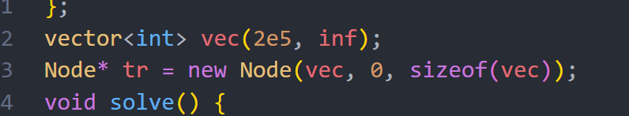

Heya~ before talking about this problem, I just wanna say that I didn’t insta fail my resolutions yay! I’ve been doing 5 problems everyday, and grinding very hard on math. I think I should also do some virtuals on top but we can start slowly :D
I want to talk about this problem, because it caused me alot of trouble due to a silly mistake XD, other than that it was a pretty standard problem.
There are two versions of the problem, with the difference being n≤1e3 on easy, and n≤2e5 on hard.
First of all, I imagined the operation as choosing an index i and letting a[i] as the max of a operation, and we can “extend” a[i] to left and right.
The only restriction when we can’t keep extending further a[i] is when we are met with a larger a[j], because $a[i] wouldn’t be the biggest anymore if the range we chose consists a[j].
So basically, for an index i, we can extend left and right to index j and k, where j<i<k, a[j]>a[i] and a[k]>a[i].
Now, we wouldn’t always want to extend as large as we can, as if theres a index j in it with b[j]<a[i], we would obviously fail making both arrays equal as we can only make it bigger not smaller.
So now we have two constraint as boundaries:
On the left side find j, where j<i, a[j]>a[i] or b[j]<a[i],
On the right side find k, where k>i, a[k]>a[i] or b[k]<a[i].
And for the boundaries we choose the largest j and smallest k.
Now we have a boundaries (ji,ki) for each index, where we can set a[ji] to a[ki] to a[i],and that we are sure that this operation will only make the array closer to what we want.
Its then sufficient to apply all the operations from the smallest a[i] to the biggest and checking if the array is the same.
The easy version is just manually doing the operations everytime with another for loop, taking O(n2) time.
The hard version requires us to do all operations quicker than O(nlogn).
Lets say that we already have all the boundaries for each index and we need to apply it, then we would need a range set element data structure to help us do this, which lazy tag segment trees can do easily in O(nlogn).
The problem now becomes finding (ji,ki) for all i quickly, which actually can we done with segment trees again!
There are two cases for each bound, for left bound, either b[j]<a[i] case or a[j]>a[i], and we want to find the biggest one.
I will talk about how to find the max j such that a[j]>a[i], as others are pretty much the same.
For this, we would want a point set/add range max segment tree, where the index is the value and inside stores the largest index with that value.
We traverse from left to right, each time we find the max value between a[i]+1 to the max value, this way we can get the biggest index j that a[j]>a[i], and we just set index i to a[i] in the segment tree.
Now just do this four times to find the bound, and do the updates with range set segment tree.
constint inf = 1e9; structNode { Node *l = 0, *r = 0; int lo, hi, mset = inf, madd = 0, val = -inf, val2 = inf; Node(int lo,int hi):lo(lo),hi(hi){} // Large interval of -inf Node(vi& v, int lo, int hi) : lo(lo), hi(hi) { if (lo + 1 < hi) { int mid = lo + (hi - lo)/2; l = newNode(v, lo, mid); r = newNode(v, mid, hi); val = max(l->val, r->val); val2 = min(l->val2, r->val2); } else val = val2 = v[lo]; } intquery(int L, int R){ if (R <= lo || hi <= L) return -inf; if (L <= lo && hi <= R) return val; push(); returnmax(l->query(L, R), r->query(L, R)); } intquery2(int L, int R){ if (R <= lo || hi <= L) return inf; if (L <= lo && hi <= R) return val2; push(); returnmin(l->query2(L, R), r->query2(L, R)); } voidadd(int L, int R, int x){ if (R <= lo || hi <= L) return; if (L <= lo && hi <= R) { madd += x; val += x; val2 += x; } else { push(), l->add(L, R, x), r->add(L, R, x); val = max(l->val, r->val); val2 = min(l->val2, r->val2); } } voidset(int L, int R, int x){ if (R <= lo || hi <= L) return; if (L <= lo && hi <= R) mset = val = val2 = x, madd = 0; else { push(), l->set(L, R, x), r->set(L, R, x); val = max(l->val, r->val); val2 = min(l->val2, r->val2); } } voidpush(){ if (!l) { int mid = lo + (hi - lo)/2; l = newNode(lo, mid); r = newNode(mid, hi); } if (mset != inf) l->set(lo,hi,mset), r->set(lo,hi,mset), mset = inf; elseif (madd) l->add(lo,hi,madd), r->add(lo,hi,madd), madd = 0; } }; vector<int> vec(2e5 + 501, inf); Node* tr = newNode(vec, 0, vec.size()); voidsolve(){ int n; cin >> n; vi a(n + 1), b(n + 1); vector<pii> order; for(int i = 1; i <= n; i++) { cin >> a[i]; order.pb({a[i], i}); } sort(all(order)); for(int i = 1; i <= n; i++) { cin >> b[i]; } tr -> set(0, (int) 2e5 + 500, n + 1); // find smallest j s.t j > i and a[j] > a[i] vector<int> a_right(n + 1); a_right[n] = n + 1; tr -> set(a[n], a[n] + 1, n); for(int i = n - 1; i >= 1; i--) { int q = min(n + 1, tr -> query2(a[i] + 1, 2e5 + 400)); a_right[i] = q; tr -> set(a[i], a[i] + 1, i); } tr -> set(0, 2e5 + 500, 0); // find largest j s.t j < i and a[j] > a[i] vector<int> a_left(n + 1); a_left[1] = 0; tr -> set(a[1], a[1] + 1, 1); for(int i = 2; i <= n; i++) { int q = max(0ll, tr -> query(a[i] + 1, 2e5 + 400)); a_left[i] = q; tr -> set(a[i], a[i] + 1, i); } tr -> set(0, 2e5 + 500, n + 1); // find smallest j s.t j > i and b[j] < a[i] vector<int> b_right(n + 1); b_right[n] = n + 1; tr -> set(b[n], b[n] + 1, n); for(int i = n - 1; i >= 1; i--) { int q = min(n + 1, tr -> query2(0, a[i])); b_right[i] = q; tr -> set(b[i], b[i] + 1, i); } tr -> set(0, 2e5 + 500, 0); // find largest j s.t j < i and b[j] < a[i]; vector<int> b_left(n + 1); b_left[1] = 0; tr -> set(b[1], b[1] + 1, 1); for(int i = 2; i <= n; i++) { int q = max(0ll, tr -> query(0, a[i])); b_left[i] = q; tr -> set(b[i], b[i] + 1, i); } tr -> set(0, 2e5 + 500, 0); for(int i = 1; i <= n; i++) {tr -> set(i, i + 1, a[i]);} for(auto [_, i] : order) { int left_bound = max(a_left[i], b_left[i]) + 1; int right_bound = min(a_right[i], b_right[i]); if(left_bound < right_bound) { tr -> set(left_bound, right_bound, a[i]); } } vector<int> ans; for(int i = 1; i <= n; i++) { int num = tr -> query(i, i + 1); ans.pb(num); if(num != b[i]) { cout << "NO" << endl; return; } } cout << "YES" << endl; return; }
Time complexity: O(nlogn)
A very stupid thing I did was making the segment tree on every testcase, which obviously TLEs, and another extremely stupid thing I did was this:

I set the segment tree size to sizeof(vec), which give the size of this object, which for vector is 24… I didn’t notice this and was wondering why my segment tree is behaving weird for 2 hours…